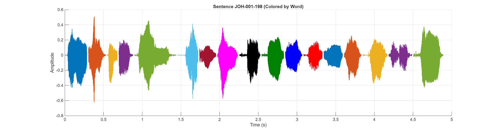

Sentence Audio:
Waveform:
| # | ID | Hanji | POJ |
|---|---|---|---|
| 1 | JOH-001-198-0002 | 因為 | In-ūi |
| 2 | JOH-001-198-0003 | 我 | góa |
| 3 | JOH-001-198-0004 | 給 | kā |
| 4 | JOH-001-198-0005 | 你 | lí |
| 5 | JOH-001-198-0006 | 講 | kóng |
| 6 | JOH-001-198-0007 | 我 | Góa |
| 7 | JOH-001-198-0008 | 已 | í |
| 8 | JOH-001-198-0009 | 經 | keng |
| 9 | JOH-001-198-0010 | 看 | khòaⁿ |
| 10 | JOH-001-198-0011 | 見 | kìⁿ |
| 11 | JOH-001-198-0012 | 你 | lí |
| 12 | JOH-001-198-0013 | 佇 | tī |
| 13 | JOH-001-198-0014 | 無 | bû |
| 14 | JOH-001-198-0015 | 花 | hoa |
| 15 | JOH-001-198-0016 | 果 | kó |
| 16 | JOH-001-198-0017 | 樹 | chhiū |
| 17 | JOH-001-198-0018 | 腳 | kha |